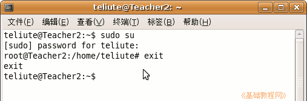

电脑操作基础
作者：TeliuTe 来源：基础教程网
二十二、常用命令 返回目录 下一课在终端里有些命令比较常用，下面我们来看一个练习；
1、进入终端
1）点菜单“应用程序－附件－终端”，可以开启一个终端窗口；

2）按键盘上的F2，在出来的对话框中输入gnome-terminal，然后点右下角的运行按钮；
；
3）按组合键 Ctrl+Alt+F2 进入终端，输入用户名和密码登录，按 Alt＋F7 返回；
2、常用命令
1）sudo 命令，以管理员身份运行命令，需要输入自己用户的密码；
2）sudo su ，切换到管理员用户(root)，这时命令提示符会变成 # 号，输入命令 exit 返回到普通用户；

3）clear 清屏命令，清除屏幕上显示的内容；
ls 列出文件夹中的文件，cd 进入一个文件夹；
4）nano 小巧的文本编辑器，Ctrl＋X 退出，Ctrl＋O 保存；
5）命令运行中，按 Ctrl＋C 取消，按 Ctrl＋Z 终止；
6）一些程序中按 Q 退出，一些输入 quit 退出；
7）输入 命令 --help 可以得到命令的帮助，也可以用 man 命令；
3、一些应用程序的命令
1）终端：gnome-terminal 文本编辑器：gedit 文件浏览器：nautilus
2）关机：halt 或 poweroff 或 shutdown 重启动：reboot
3）输入命令时按 Tab 键可以自动补全剩下的字母；
4）按上、下方向键，可以调出以前输入的命令；
本节学习了在Ubuntu中的一些常用命令，如果你成功地完成了练习，请继续学习下一课内容；
本教程由86团学校TeliuTe制作|著作权所有
基础教程网：http://teliute.org/
美丽的校园……
转载和引用本站内容，请保留版权信息和本站链接。